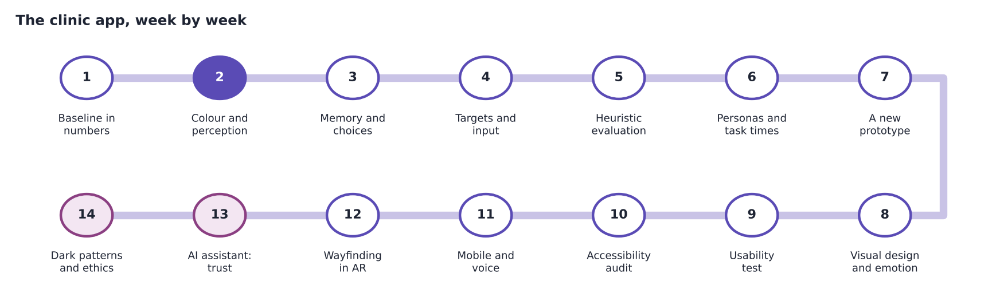
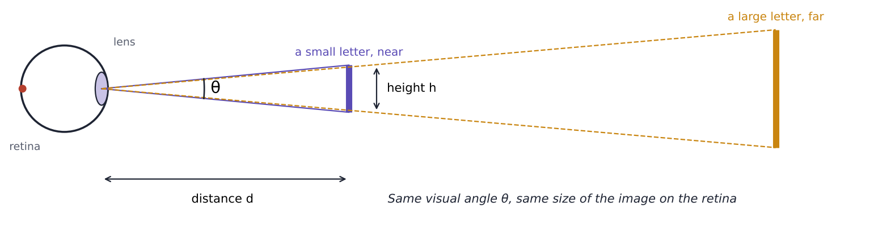
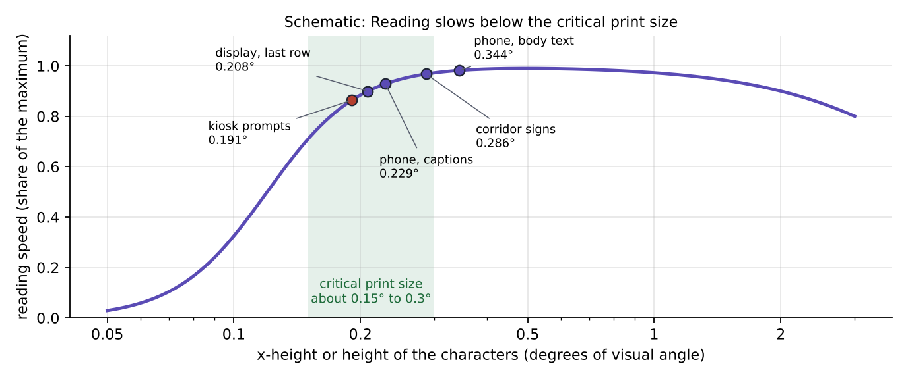
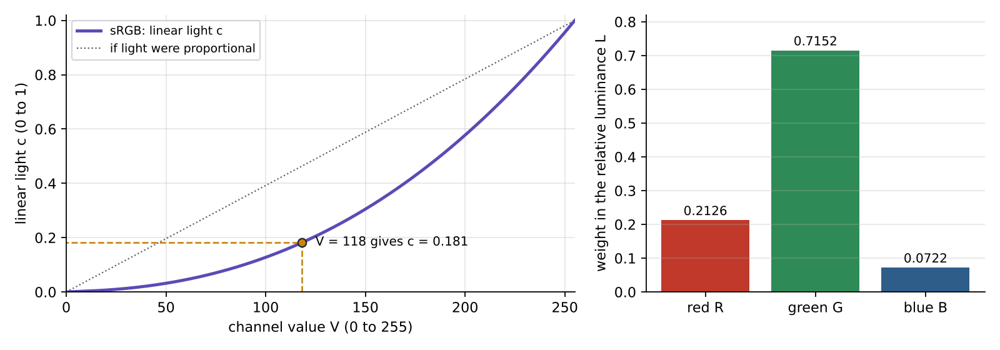
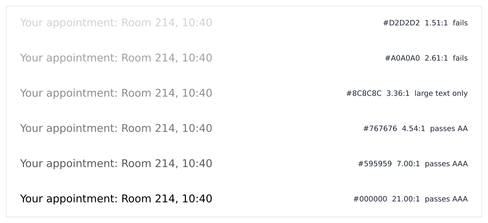
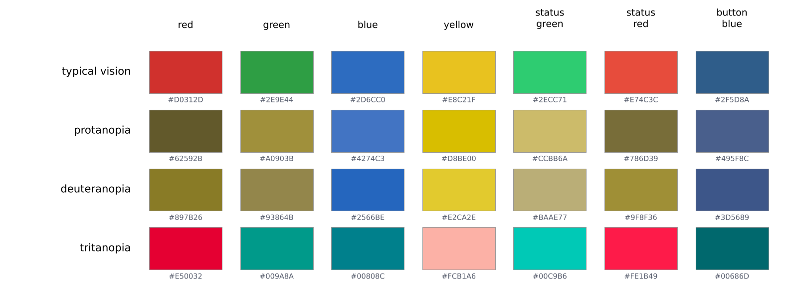
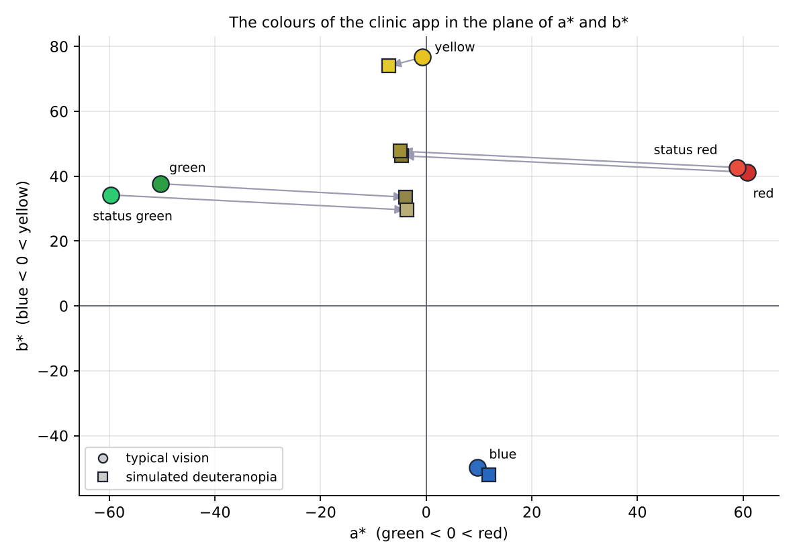
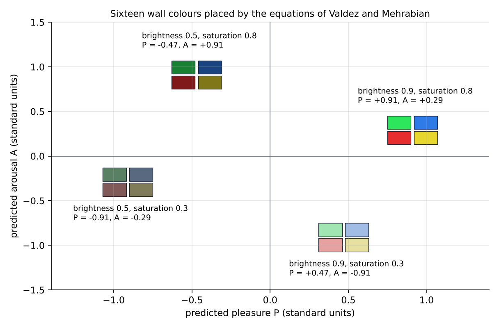
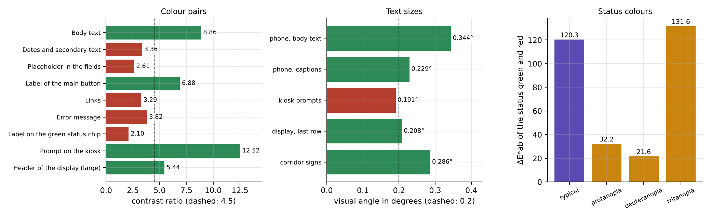

Overview
Week 1 placed a person on one side of the interaction loop. This week starts the study of that person with the first stage of evaluation: Before people can interpret a screen, they must see it. The week follows light from the screen to the eye. It starts with the visual angle, which decides whether a text can be read from where a patient stands. A screen mixes red, green and blue light in every pixel, so each colour on it is three numbers, and the week computes with them. Luminance and contrast lead to the criteria of the Web Content Accessibility Guidelines (WCAG) [1]. Colour vision and its deficiencies follow, with a simulation of how other people see a screen and a measure of how different two colours look. The psychological effects of colour come next, from published models of emotion to the limits of the evidence. The clinic app reaches stage 2, an audit of its colours, contrast and text sizes. The week closes with colour in the interfaces of artificial intelligence (AI).
Week at a glance
flowchart LR A["The eye and the visual angle"] --> B["Colour on a screen"] B --> C["Luminance and contrast"] C --> D["Colour vision and its deficiencies"] D --> E["Measuring colour difference"] E --> F["Psychological effects of colour"] F --> G["Interface clinic"] G --> H["The human side"] H --> S["The clinic app, stage 2"] S --> I["Toward human-AI interaction"]
Every method on this page is also written as Python code in the Colab notebook of the week. Its code is divided into numbered sections. Each orange box on this page names the section whose code carries out what the text above the box explains. The box says what to run and what to look at in that section, and its button opens the Colab notebook at that place. The games, the practice parts and the self-assessment of the week are in the interactive lab. Each violet box opens one part of the interactive lab. The part ends with a link back to its box on this page, and the Colab notebook is always opened from the orange boxes here.
Python step 2: Arrays and functions for colour and contrast
Python code in the Colab notebook, right after Section 0 (setup). Open the Colab notebook and run this step cell by cell: It consists of short pieces of Python code with their explanations, a quick check and three exercises. Topics: Arrays · Masks · Colours as numbers · Functions with default values · Two-dimensional arrays · A matrix times a colour.
The step continues with Python [2] and introduces the arrays of the library NumPy [3]. Arrays hold many numbers and compute with all of them at once. It converts the font sizes of the clinic app into millimetres and selects the small ones with a condition. It then reads colour codes as numbers, mixes colours with a function and stores a palette as a table. The last piece transforms a whole palette with one matrix, the operation behind the simulation of colour vision later this week. Students who have never programmed start with the start-here notebook of the course.
Week 1 measured the booking flow of the clinic app as it is. Only 31.8 percent of the patients book without a slip, a booking takes 96.2 seconds on average, and 10.9 percent of the patients give up. The baseline traced these losses to gulfs of execution and evaluation.
This week asks a more basic question: Can the patients see the screens at all? Stage 2 audits the colours, the contrast and the text sizes of the app, the kiosk and the waiting room display. It also checks the colour signals of the app for patients with a colour vision deficiency and chooses a colour for the walls of the waiting room.

The eye and the visual angle
Light from a screen passes through the cornea, the pupil and the lens and forms an image on the retina at the back of the eye [4]. The retina holds two kinds of receptors. About 120 million rods work in dim light and do not distinguish colours. About 6 million cones work in daylight and come in three types, which respond best to short, medium and long wavelengths of light. Cones are packed most densely in the fovea, a small region at the centre of the retina. Only the image on the fovea is seen sharply, so the eyes keep moving to bring each part of a screen onto it.

What matters for reading is therefore not the size of a letter in millimetres but the size of its image on the retina. That size depends on the height of the letter and on its distance together. The visual angle joins both: It is the angle that an object subtends at the eye [4]. For an object of height \(h\), seen face on from the distance \(d\), it is
Here \(h\) and \(d\) must be in the same unit, for example millimetres. For text, \(h\) is usually the x-height, the height of lowercase letters such as x, or the height of the capitals and digits in a code. The function \(\arctan\) returns the angle in radians, and multiplying by \(180/\pi = 57.30\) gives degrees. One degree has 60 arcminutes (arcmin). For the small angles of reading, \(\arctan x\) is practically equal to \(x\), so \(\theta \approx 57.3\, h/d\) in degrees.
→ This formula with numbers, step by step: Lab Part A, calculator, steps 1 to 7.
A worked example. The prompts on the kiosk of the clinic app have an x-height of \(h = 2.0\) mm, and a patient reads them from \(d = 600\) mm. Then \(h/(2d) = 2.0/1200 = 0.00167\). For an angle this small, \(\arctan(0.00167) = 0.00167\) rad, so \(\theta = 2 \times 0.00167 = 0.00334\) rad. In degrees, \(\theta = 0.00334 \times 57.30 = 0.191°\), which is \(0.191 \times 60 = 11.5\) arcmin.
Is that enough? Legge and Bigelow reviewed the research on print size and reading speed [5]. Reading is fastest when the x-height subtends more than a critical print size of about 0.2°, with values between about 0.15° and 0.3° among readers with normal vision. Below it, reading slows down steeply. Above it, the speed stays nearly constant up to about 2°. The kiosk prompt, at 0.191°, sits just below the critical print size even for a reader with normal vision. A patient with reduced vision reads it slowly or not at all. Solving the formula for \(h\) gives the height needed for an angle \(\theta\):
For a comfortable 0.3° at 600 mm, \(h \)\({}= 1200 \times \tan(0.15°) \)\({}= 1200 \times 0.00262 \)\({}= 3.14\) mm, about one and a half times the current prompt. The same formula sizes signs: The letters of a sign read from 6 m need ten times the height of letters read from 60 cm.

Check your understanding. A corridor sign has letters 30 mm high and is read from 6 m. A caption in the app has an x-height of 1.4 mm and is read from 35 cm. Which one has the larger visual angle?
- Where in a hospital do people read from far away, and who among them reads most slowly?
- Why is making the text larger not always possible? Think of the size of a phone, the number of words and the space on a wall.
- A kiosk is used by patients standing and by patients in wheelchairs. How does that change \(d\), and what follows for the design?
Part A of the interactive lab measures your own reading at a distance. You sit in the 3D waiting room of the clinic, and the display on the front wall calls queue codes of different sizes. The page computes the visual angle of each code at your eye, from its size on your screen and the distance at which you sit. Section 1 of the Colab notebook then fits your reading curve and finds your threshold.
Interactive lab, Part A. The queue display in 3D: Twenty-one codes at seven visual angles, read from four rows of the waiting room, followed by the calculator of the visual angle. The results can be copied into the Colab notebook.
Python code in the Colab notebook, Section 1. Open Section 1 of the Colab notebook and run it. The function visual_angle computes \(\theta\) for single values and whole tables, and height_for_angle inverts it. A table checks the five texts of the clinic app against the critical print size. Paste the results of Part A into MY_READING, and the function fit_threshold finds the threshold of every student by maximum likelihood. A figure shows the reading curves and the thresholds of the class, and the last line sizes the queue codes for the last row of the waiting room.
Colour on a screen
A screen makes every colour from three lights. Each pixel holds a red, a green and a blue element, which are too small to be seen one by one, so the eye mixes their light. This is additive mixing: Red and green light together look yellow, and all three at full strength look white. Apps and web pages store a colour as three numbers from 0 to 255, one per channel, often written as a hexadecimal code. In the code #2F5D8A, the pairs 2F, 5D and 8A are the red, green and blue values 47, 93 and 138. The standard colour space of screens, called sRGB (standard red, green and blue), defines which colour these numbers mean [6].
The numbers are not proportional to the light that the screen emits. The eye is far more sensitive to differences between dark colours than between light ones: Perceived lightness grows roughly with the cube root of the light [7]. The sRGB standard therefore spaces its 256 values more finely at the dark end [6]. Before lights are added or compared, a channel value \(V\) must be turned into a linear light intensity \(c\) between 0 and 1:
The short straight part avoids an infinitely steep curve near black, and the power 2.4 covers the rest. For the grey #767676, each channel is \(V = 118\). Then \(V/255 = 0.4627\), which is above 0.04045, so \((0.4627 + 0.055)/1.055 = 0.4907\) and \(c = 0.4907^{2.4} = 0.1811\). A value at 46 percent of the scale emits only 18 percent of the full light.

Animation. Three lights make one colour. The sliders set the sRGB values of the red, green and blue channels. The bars show their linear light and their share of the relative luminance \(L\), and the readouts give the contrast ratio of the colour against white and against black. Try a pure blue and a pure green: Both use one channel at 255, but their luminances differ by a factor of ten.
A drop of water on a phone screen acts as a small magnifying glass. Under it, a white area turns into rows of tiny red, green and blue elements, and a yellow area shows only the red and green ones lit.
Luminance and contrast
The eye is not equally sensitive to the three lights. The relative luminance \(L\) weights the linear values by the sensitivity of the eye in daylight [1]:
Here \(R\), \(G\) and \(B\) are the linear values \(c\) of the three channels. \(L\) runs from 0 for black to 1 for white. Green contributes 72 percent of the luminance of white, red 21 percent and blue only 7 percent. A pure blue therefore looks much darker than a pure green of the same value.
Text is readable when it differs enough in luminance from its background. WCAG measures the difference with the contrast ratio (CR) [1]:
\(L_1\) is the relative luminance of the lighter colour and \(L_2\) that of the darker one. The constant 0.05 stands for a small amount of stray light on the screen, and it keeps the ratio finite for black. The ratio runs from 1 for two equal colours to \((1 + 0.05)/(0 + 0.05) = 21\) for black on white. It is written as 4.5:1 and read as four and a half to one.
WCAG 2.2 sets three levels of conformance, A, AA and AAA, and most laws and policies ask for level AA [1]. At level AA, normal text needs a ratio of at least 4.5:1 and large text at least 3:1. Large text means at least 18 point, or 14 point in bold. Level AAA raises the two values to 7:1 and 4.5:1. Icons, the borders of input fields and other graphics that people need to see need 3:1 at level AA. Text in a disabled control and text in a logo have no requirement.
→ These formulas with numbers, step by step: Lab Part B, steps 1 to 7.
A worked example. Is grey text #767676 on a white background enough? From the previous section, each channel of the grey has \(c = 0.1811\). Because the three channels are equal, \(L_2 \)\({}= (0.2126 + 0.7152 + 0.0722) \times 0.1811 \)\({}= 0.1811\). White has \(L_1 = 1\). The ratio is \(\mathrm{CR} \)\({}= (1 + 0.05)/(0.1811 + 0.05) \)\({}= 1.05/0.2311 \)\({}= 4.54\), which passes level AA for normal text. One step lighter, #777777 with \(V = 119\), gives 4.48 and fails. The border between pass and fail is a single step of the 255.

Check your understanding. What is the contrast ratio of black text on a white background?
Check your understanding. Which minimum contrast ratio does WCAG 2.2 require at level AA for normal text?
- Many apps print dates, hints and secondary text in light grey. Why do designers like it, and who pays for it?
- A pair passes level AA on a new phone in an office. Does that mean that every patient can read it?
- Should an app offer a high-contrast mode, or should its normal mode simply pass level AAA?
Interactive lab, Part B. The contrast ratio of this section step by step: Two lists of colours from the clinic app, the linearization of each channel, the two luminances, the ratio and the verdict.
Python code in the Colab notebook, Section 2. Open Section 2 of the Colab notebook and run it. The functions linearize, relative_luminance and contrast_ratio carry out the formulas of this section and are checked on the worked example. A table audits the ten colour pairs of the clinic app at levels AA and AAA. A map then shows the ratio of every grey text on every grey background, and the Explore panel computes the ratio of any two colours that you choose.
Colour vision and its deficiencies
Colour vision rests on the three types of cones [4]. A light excites the three types to different degrees, and the brain compares their signals. The comparison works in opposing pairs, red against green and blue against yellow, which is why no colour looks reddish green or bluish yellow.
When one type of cone is missing or works differently, colours that differ only in the signal of that type look alike. In protanopia the long-wavelength cones are missing, and in deuteranopia the medium-wavelength cones. Both confuse reds, greens, browns and oranges. In tritanopia the short-wavelength cones are missing, which confuses blues with greens, and it is rare. Milder forms keep all three types with a shifted sensitivity and are called anomalous trichromacy.
Red-green deficiencies are inherited on the X chromosome, so they are far more common in men. Birch estimates that about 8 percent of men and 0.4 percent of women of European origin have one, and 4 to 6.5 percent of Chinese and Japanese men [8]. Suppose that 600 patients use the kiosks of the clinic each day, half of them men, and that the European figures apply. Then about \(0.08 \times 300 \)\({}+ 0.004 \times 300 \)\({}= 24 \)\({}+ 1.2 \)\({}= 25.2\) patients a day have a red-green deficiency.
Machado, Oliveira and Fernandes built a model of the cones that simulates these deficiencies on a screen [9]. For each deficiency, a matrix \(M\) turns the linear values of a colour into the values of the colour that looks the same to the affected viewer:
\(R\), \(G\) and \(B\) are linear values as in the previous section, and \(R'\), \(G'\) and \(B'\) are the simulated ones. Each row of the matrix mixes the three channels into one new channel. The values shown are those for complete deuteranopia, rounded to three decimals, and the Colab notebook uses all six decimals of the authors. Applying the matrices to linear values is the choice of this course.
A worked example. The green of the status dots of the clinic app is #2ECC71, with the linear values \((0.0273, 0.6038, 0.1651)\). The first row of the matrix gives \(R' \)\({}= 0.367 \times 0.0273 \)\({}+ 0.861 \times 0.6038 \)\({}- 0.228 \times 0.1651\), which is \(0.0100 + 0.5199 - 0.0376 = 0.4923\). The other rows give \(G' = 0.4218\) and \(B' = 0.1857\) in the same way. Encoded again as sRGB, the green becomes #BAAE77, a dull olive. The red of the status dots, #E74C3C, becomes #9F8F36, another olive. A patient with deuteranopia sees two similar olives where the app shows green and red.

Scene: Five pairs of eyes. The waiting room of the clinic as five different patients see it. The first row of buttons chooses the eyes: Typical colour vision, one of three deficiencies simulated with the matrices of Machado and colleagues, or an illustrative older eye. The older eye receives less light and more scattered light. The second row switches the room between colour alone and a redesign with symbols, words and stronger contrast. The readouts show what the chosen eyes see: The colour difference of the status colours and of the floor lines, and the contrast of the queue codes. Drag the scene to look around.
A design must therefore never rely on colour alone, and WCAG 2.2 makes this a criterion at the lowest level, A. Colour must not be the only visual means of conveying information, indicating an action, prompting a response or distinguishing a visual element [1]. Redundant coding adds a second channel to the colour: A word, an icon, a shape, a pattern or a position.
A traffic light does not rely on colour alone. Red is always at the top and green at the bottom, so a driver with deuteranopia reads the position even when the two lamps look alike.
Check your understanding. About what share of men of European origin have a red-green colour vision deficiency?
- Find three signals in devices or apps that you use which rely on colour alone, such as a charging light or an error in a form. How would a person with deuteranopia get the message?
- Which second channel would you add to each: A word, an icon, a shape or a position?
- Is redundant coding only for people with a deficiency, or does it help everyone?
Part C of the interactive lab puts these ideas to a test in 3D. Four coloured lines on the floor of a hospital corridor lead to four doors, and each trial asks you to follow one of them. One block shows typical colours, and two blocks simulate deuteranopia, with and without symbols on the lines.
Interactive lab, Part C. Follow the line in 3D: Twenty-four trials in three blocks, with typical colours, simulated deuteranopia and simulated deuteranopia with symbols. The results can be copied into the Colab notebook.
Measuring colour difference
How different do two colours look? The distance between their sRGB values is a poor answer, because equal distances in sRGB do not look equally large. The International Commission on Illumination (CIE) designed a colour space in which distances correspond better to perceived differences [7]. Its name, CIELAB, joins the initials of the commission with its three coordinates. They are the lightness \(L^*\) from 0 (black) to 100 (white), \(a^*\) from green (negative) to red (positive) and \(b^*\) from blue (negative) to yellow (positive). The two colour axes repeat the opposing pairs of colour vision.
The conversion takes two steps. A matrix first turns the linear values into the three tristimulus values \(X\), \(Y\) and \(Z\) of the CIE [6]:
The second row is the relative luminance of the previous sections, so \(Y = L\). The second step compares \(X\), \(Y\) and \(Z\) with the white of the screen, \(X_n = 0.9505\), \(Y_n = 1.0000\) and \(Z_n = 1.0890\). These values are the sums of the three rows of the matrix [7]:
The function \(f(t)\) is the cube root \(t^{1/3}\) for \(t > 0.008856\). Below that value it is the straight line \(f(t) = 7.787\, t + 0.1379\), again to avoid a steep curve near black. The cube root is the lightness of perception from the previous section. The colour difference of the CIE from 1976 is the straight distance in this space:
A worked example. The status green #2ECC71 has \((L^*, a^*, b^*) \)\({}= (72.86, -59.72, 34.20)\), and the status red #E74C3C has \((54.54, 58.91, 42.67)\). The differences are 18.32, \(-118.63\) and \(-8.47\), whose squares add up to \(335.62 + 14073.08 + 71.74 = 14480.44\). So \(\Delta E^*_{ab} \)\({}= \sqrt{14480.44} \)\({}= 120.3\), a very large difference. The two olives of the simulated deuteranopia have \((70.84, -3.65, 29.56)\) and \((59.21, -4.92, 47.69)\). Their differences are 11.63, 1.27 and \(-18.13\), and \(135.26 + 1.61 + 328.70 = 465.57\), so \(\Delta E^*_{ab} = 21.6\). For this patient the difference shrinks to less than a fifth, and almost all of the red-green axis \(a^*\) is gone.

\(\Delta E^*_{ab}\) is the oldest and simplest formula. Later formulas of the CIE, such as the formula CIEDE2000 of the year 2000, correct the places where CIELAB is still uneven [7]. This course uses \(\Delta E^*_{ab}\) only to compare differences, such as the same pair of colours for different viewers. It does not use it as an absolute threshold of what can be seen.
Check your understanding. Two colours have \((L^*, a^*, b^*) = (50, 20, 10)\) and \((50, 20, 22)\). What is \(\Delta E^*_{ab}\)?
Python code in the Colab notebook, Section 3. Open Section 3 of the Colab notebook and run it. The function simulate applies the matrices of Machado and colleagues, and to_lab and delta_e carry out the formulas of this section, checked on the worked example. A table gives \(\Delta E^*_{ab}\) between the four wayfinding lines for four kinds of vision. Paste the results of Part C into MY_LINES, and the code relates every trial to the colour difference between the target line and its most similar neighbour. A figure shows the colours as seen with each kind of vision and the errors against \(\Delta E^*_{ab}\).
The psychological effects of colour
Colours do more than carry information: They also change how a screen or a room feels. Psychology often describes feelings along three dimensions. Pleasure runs from unhappy to happy, arousal from calm to excited, and dominance from controlled to in control. The Self-Assessment Manikin (SAM) measures them with a pictorial scale on which people rate each dimension from 1 to 9 [10]. It needs no words, so it can be used across languages.
Valdez and Mehrabian showed colour samples of controlled hue, brightness and saturation to students and recorded their reactions on these three dimensions [11]. Brightness and saturation predicted the reactions strongly and consistently, while hue had weaker effects. With brightness \(B\) and saturation \(S\) in standard units, they reported the equations
Standard units say how many standard deviations a value lies above the mean of the colours in a set. For the brightness, \(B = (b - \bar{b})/s_b\), where \(b\) is the brightness of a colour, \(\bar{b}\) the mean and \(s_b\) the standard deviation. The predicted pleasure \(P\), arousal \(A\) and dominance \(D\) are in standard units as well. Brighter colours were more pleasant and less arousing. More saturated colours were more arousing and somewhat more pleasant.
A worked example. A bright, muted colour with \(B = 1.0\) and \(S = -0.5\) gives \(P = 0.690 - 0.110 = 0.580\), \(A = -0.310 - 0.300 = -0.610\) and \(D = -0.760 - 0.160 = -0.920\). It is pleasant and calm. A dark, saturated colour with \(B = -0.6\) and \(S = 1.4\) gives \(P = -0.414 + 0.308 = -0.106\) and \(A = 0.186 + 0.840 = 1.026\). It is slightly unpleasant and much more arousing.

Some associations of colour seem to be shared widely. Jonauskaite and colleagues asked people in 30 nations which emotions they associate with twelve colour terms [12]. The pattern of each nation correlated on average 0.88 with the pattern of all nations together. Nations that are close in language or geography were more similar still. Red, for example, was linked both with love and with anger.
The evidence has clear limits. Elliot and Maier conclude in their review that research on colour psychology is still young, with many findings resting on few studies [13]. The same colour can mean different things in different contexts: Red can signal danger in an exam and attraction on a date. A well-known claim, that red impairs performance in tests, did not survive a meta-analysis. Gnambs pooled 67 effects from 38 samples and found no reliable effect after correcting for publication bias [14].
For design, colour psychology gives hypotheses, not rules. A team that wants a calm waiting room can start from the equations: Bright, muted colours predict more pleasure and less arousal. It must then test its choice with the people who use the room, because the context, the culture and the task change the effect. The interface clinic below adds a second lesson: The meaning of a colour wears off when it is used for everything.
Check your understanding. According to the equations of Valdez and Mehrabian, which change makes a colour more arousing?
- Which feelings should the waiting room of a hospital support, and which should the screen of an emergency alarm support? What follows for their colours?
- Which claims about colour have you heard, such as blue calms or red makes people hungry? How would you test one of them?
- Does red mean the same in Türkiye as in the other countries of your favourite apps? Where could the meaning change?
Part D of the interactive lab lets you rate the waiting room of the clinic in sixteen colours, then paint it yourself. The page fits a small model to your own ratings while you paint, and Section 4 of the Colab notebook compares your weights with those of Valdez and Mehrabian.
Interactive lab, Part D. Paint the waiting room in 3D: Sixteen wall colours rated for pleasure and arousal, then a colour of your own design. The page predicts your feelings with your personal model and checks the contrast of the wall sign.
Python code in the Colab notebook, Section 4. Open Section 4 of the Colab notebook and run it. The function predict_pad carries out the equations of Valdez and Mehrabian and is checked on the worked example. Paste the results of Part D into MY_ROOM, and standardized_weights fits the weights of brightness and saturation to your ratings and to those of a simulated class. A table and a figure compare them with the published weights, and a surface in 3D shows the predicted pleasure.
Interface clinic: Colour and type on the clinic screens, before and after
The four pairs below show screens of the clinic app before and after a redesign. Each pair names the perceptual problem and the rule that solves it. The numbers come from the formulas of this week.
Interface clinic: The status of an appointment. The list of appointments in the clinic app, with three appointments in three different states.
BeforeColoured dots alone
Only colour separates the three states, and the key sits at the bottom. With deuteranopia the green and the red dot differ by \(\Delta E^*_{ab} = 21.6\) instead of 120.3, so the patient must guess. The design breaks the WCAG criterion on the use of colour.
AfterWord, icon and colour together
Each state has a word and an icon, and the colour only supports them. The dark text on the pale chips passes level AA, and a patient who cannot tell the colours apart reads the words.
Interface clinic: The login form. Step 1 of the booking flow, where a patient types the patient number and a password.
BeforeGrey placeholders instead of labels
The placeholders reach only 2.61:1 and vanish as soon as the patient types, so the field forgets what it asks for. The borders, #E3E3E3 on white, reach only 1.28:1, far below the 3:1 for graphics that people need to see.
AfterLabels above, visible borders and a hint
The labels stay above the fields at 8.86:1, the borders reach 4.54:1 and the hint, #595959, reaches 7.00:1, the threshold of level AAA. The patient always sees what each field wants.
Interface clinic: Notices on the home screen. Three notices that the clinic app shows on its home screen the day before an appointment.
BeforeEverything in alarm red
Three ordinary notices look like three emergencies, and white on #E74C3C reaches only 3.82:1. Red raises arousal and signals danger, and when everything is red, nothing stands out: A real problem, such as a cancelled appointment, would look like the news about parking.
AfterColour by importance
The appointment uses the calm colour of the app, the task to do is amber with an icon, and the news is neutral grey. Red stays reserved for real problems, so it keeps its meaning, and every text passes level AA.
Interface clinic: The appointment card. The card that answers the two questions of every patient: When, and where?
BeforeThe doctor first, when and where in small grey
The largest text answers a question that the patient rarely asks. The date, the time and the room, the answers that matter, are printed at 10 pixels in #8C8C8C with 3.36:1, and the code B-2-214 must be decoded.
AfterWhen and where first, in plain words
The size of each line follows the importance of its answer, all text is dark on white, and the room is written out. A button leads to the route, which Week 12 builds in augmented reality.
- Which of the four screens marked Before would a patient of 75 struggle with first, and why?
- Each redesign adds something: Words, a border, a colour or space. What does each addition cost?
- Which redesign changes the feeling of the app most, and which one changes only its readability?
The human side: Age, light and situation
Perception changes with age. From about the age of forty, the lens slowly loses its ability to focus on near objects, a condition called presbyopia, and reading a phone needs glasses [4]. Later, the pupil becomes smaller and the lens denser, so less light reaches the retina. More light is scattered inside the eye, and the sensitivity to contrast declines, above all for fine detail [15]. An older patient therefore needs larger text, more contrast and more light than a student.
The situation matters as much as the person. A phone used outdoors reflects daylight from its glass, and the reflection adds light to every pixel, dark ones included. If reflections add \(r\) to both luminances, the contrast ratio becomes
Suppose that \(r = 0.2\), an illustrative value for a phone near a bright window. Black on white falls from 21 to \((1 + 0.05 + 0.2)/(0 + 0.05 + 0.2) \)\({}= 1.25/0.25 \)\({}= 5.00\). The grey #767676, which passed level AA with 4.54, falls to \(1.25/(0.1811 + 0.25) \)\({}= 1.25/0.4311 \)\({}= 2.90\). A design that just passes in the office fails in the sun, so a margin above the minimum protects real use.
Accessibility asks whether people with disabilities can use a system at all. People with low vision, whose sight cannot be fully corrected by glasses, enlarge text, raise contrast or use a screen reader. WCAG turns their needs into testable criteria, such as text that can be enlarged to 200 percent without losing content [1]. Week 10 audits the clinic app against these criteria.
People shade a phone with a hand, tilt it away from the sun or turn the brightness up. All three moves fight the reflections: They lower \(r\) or raise the luminance of the light pixels.
- Where do patients use the clinic app: In bed at night, on a bus, in a sunny car park? Which of these places is hardest for the screens that you saw this week?
- A dark mode lowers the luminance of the whole screen. For which patients and situations is it better, and for which is it worse?
The clinic app, stage 2: An audit of colour, contrast and size
The formulas of this week now audit the clinic app. The first table gives the ten colour pairs of the app, the kiosk and the waiting room display, with the contrast ratio, the requirement of level AA and the verdict.
| Role | Text on background | Ratio | AA needs | Verdict |
|---|---|---|---|---|
| Body text | #4A4A4A on #FFFFFF | 8.86 | 4.5 | Pass (also AAA) |
| Dates and secondary text | #8C8C8C on #FFFFFF | 3.36 | 4.5 | Fail |
| Placeholder in the fields | #A0A0A0 on #FFFFFF | 2.61 | 4.5 | Fail |
| Label of the main button | #FFFFFF on #2F5D8A | 6.88 | 4.5 | Pass |
| Links | #4A90E2 on #FFFFFF | 3.29 | 4.5 | Fail |
| Error message | #E74C3C on #FFFFFF | 3.82 | 4.5 | Fail |
| Label on the green status chip | #FFFFFF on #2ECC71 | 2.10 | 4.5 | Fail |
| Prompt on the kiosk | #FFE08A on #0E2236 | 12.52 | 4.5 | Pass (also AAA) |
| Header of the waiting room display | #FFFFFF on #C0392B | 5.44 | 3.0 (large) | Pass (also AAA) |
| Label of a disabled button | #BDBDBD on #F2F2F2 | 1.68 | None | Exempt |
Five of the nine pairs with a requirement fail level AA. Three of them are typical of modern apps: Light grey for secondary text and placeholders, a light blue for links and white text on a bright green. The error message fails as well, so the one text that a patient must not miss is hard to read. With reflections of \(r = 0.2\), only the kiosk prompt still passes, which the Colab notebook shows in Section 5.
| Text | Height (mm) | Distance (mm) | Angle | Fluent reading |
|---|---|---|---|---|
| Phone, body text | 2.1 | 350 | 0.344° | Yes |
| Phone, captions under the appointments | 1.4 | 350 | 0.229° | Yes |
| Kiosk, prompts | 2.0 | 600 | 0.191° | No |
| Display, queue codes from the last row | 40 | 11,000 | 0.208° | Barely |
| Corridor signs, department names | 30 | 6,000 | 0.286° | Yes |
Only the kiosk prompts fall below the critical print size of 0.2°, but the queue codes reach it from the last row by a narrow margin. The status dots of the appointment list, green #2ECC71 and red #E74C3C, differ by \(\Delta E^*_{ab} = 120.3\) for typical vision, 32.2 with protanopia, 21.6 with deuteranopia and 131.6 with tritanopia. They carry no word or icon, so they break the criterion on the use of colour for about 25 patients a day at the kiosks alone.
| Wall colour | Code | Predicted pleasure | Predicted arousal |
|---|---|---|---|
| Current orange | #D35400 | +0.84 | +0.88 |
| Pale blue | #A9CCE3 | +0.40 | −1.00 |
| Light sand | #E8D8B0 | +0.45 | −1.07 |
The last table applies the equations of Valdez and Mehrabian to the current wall colour and two candidates, in the standard units of the sixteen colours of Part D. The orange is predicted to be slightly more pleasant than the pale colours, because saturation adds pleasure, but it is also far more arousing. For a room where anxious patients wait, the pale blue and the light sand are the better hypotheses. Week 9 tests such choices with users.

| Question of stage 2 | Answer of the audit | Where |
|---|---|---|
| How many colour pairs fail level AA? | 5 of 9, the error message too | Section 5 |
| Which texts are too small? | The kiosk prompts, 0.191° | Section 5 |
| Do the status colours work for all? | No: \(\Delta E^*_{ab}\) 21.6 with deuteranopia | Section 5 |
| Which wall suits the waiting room? | Pale blue or light sand | Section 5 |
The audit gives the redesign of later weeks clear targets. Text colours must be darker, and labels must sit outside the fields. Every status colour needs a word and an icon, the kiosk prompts must grow, and the waiting room should become calmer. Week 8 turns these targets into a visual design, and Week 10 audits the result against WCAG.
Check your understanding. In the audit, which pair of the clinic app has the lowest contrast ratio among those with a requirement?
Interactive lab, Part E. A pharmacy app and its sign: A contrast ratio, a visual angle and a predicted pleasure, computed by hand.
Python code in the Colab notebook, Section 5. Open Section 5 of the Colab notebook and run it. The code joins the functions of Sections 1 to 4 into the dictionary AUDIT. It holds the failing pairs, the small texts and the status colours for four kinds of vision. It also holds the pairs in the sun and the predicted feelings for three wall colours. A figure draws the three panels of the figure above.
Your application
The same audit applies to any app. The Colab notebook holds an application switch with four further apps: Online banking, an e-government service, food delivery and course registration at a university. Choose one, run the audit and find its weakest colour pair.
Python code in the Colab notebook, Section 6. Open Section 6 of the Colab notebook, set APP to one of the five names in the comment and run the cells. The code computes the contrast ratio of every colour pair and the visual angle of every text, names the weakest pair and draws all pairs as they look.
Toward human-AI interaction
Systems based on AI often speak through colour. A diagnosis tool marks a finding in red, amber or green according to the confidence of its model, and a writing assistant underlines words in colours. Every lesson of this week applies to these signals. Colour alone excludes users with a deficiency, and a red label can push a user to act on an output that the model itself is unsure about. Amershi and colleagues ask AI systems to make clear how well they can do what they do [16]. A colour scale without numbers or words rarely meets that guideline.
Generative AI also designs interfaces now: It proposes palettes, themes and whole screens. A model that has seen many attractive palettes has not computed their contrast. The formulas of this week can check every proposal automatically. This is a small example of human-centred AI: Human needs, written as measurable criteria, guard the output of a model [17].
An assistant that marks an answer in amber and adds Medium confidence: The source is two years old gives the user a reason and a second cue. The amber alone would leave the user to guess what it means.
- Find an AI tool that uses colour to show confidence, risk or importance. Does it add words or numbers?
- Should a palette proposed by a generative AI be checked by a person, by a program or by both? Who is responsible when it fails a patient with low vision?
Review cards
Select a card to turn it over.
References
[1] Campbell, A., Adams, C., Bradley Montgomery, R., Cooper, M., & Kirkpatrick, A. (Eds.). (2023). Web Content Accessibility Guidelines (WCAG) 2.2 (W3C Recommendation). World Wide Web Consortium. https://www.w3.org/TR/WCAG22/
[2] Van Rossum, G., & Drake, F. L. (2009). Python 3 Reference Manual. CreateSpace.
[3] Harris, C. R., Millman, K. J., van der Walt, S. J., Gommers, R., Virtanen, P., Cournapeau, D., Wieser, E., Taylor, J., Berg, S., Smith, N. J., Kern, R., Picus, M., Hoyer, S., van Kerkwijk, M. H., Brett, M., Haldane, A., Fernández del Río, J., Wiebe, M., Peterson, P., Gérard-Marchant, P., Sheppard, K., Reddy, T., Weckesser, W., Abbasi, H., Gohlke, C., & Oliphant, T. E. (2020). Array programming with NumPy. Nature, 585(7825), 357-362. https://doi.org/10.1038/s41586-020-2649-2
[4] Goldstein, E. B., & Cacciamani, L. (2021). Sensation and Perception (11th ed.). Cengage. https://www.cengage.com/c/new-edition/9780357446478
[5] Legge, G. E., & Bigelow, C. A. (2011). Does print size matter for reading? A review of findings from vision science and typography. Journal of Vision, 11(5), 8. https://doi.org/10.1167/11.5.8
[6] International Electrotechnical Commission. (1999). Multimedia systems and equipment - Colour measurement and management - Part 2-1: Colour management - Default RGB colour space - sRGB (IEC Standard No. 61966-2-1:1999). IEC. https://webstore.iec.ch/publication/6169
[7] Commission Internationale de l'Eclairage. (2018). Colorimetry (4th ed., CIE 015:2018). CIE. https://doi.org/10.25039/TR.015.2018
[8] Birch, J. (2012). Worldwide prevalence of red-green color deficiency. Journal of the Optical Society of America A, 29(3), 313-320. https://doi.org/10.1364/JOSAA.29.000313
[9] Machado, G. M., Oliveira, M. M., & Fernandes, L. A. F. (2009). A physiologically-based model for simulation of color vision deficiency. IEEE Transactions on Visualization and Computer Graphics, 15(6), 1291-1298. https://doi.org/10.1109/TVCG.2009.113
[10] Bradley, M. M., & Lang, P. J. (1994). Measuring emotion: The Self-Assessment Manikin and the semantic differential. Journal of Behavior Therapy and Experimental Psychiatry, 25(1), 49-59. https://doi.org/10.1016/0005-7916(94)90063-9
[11] Valdez, P., & Mehrabian, A. (1994). Effects of color on emotions. Journal of Experimental Psychology: General, 123(4), 394-409. https://doi.org/10.1037/0096-3445.123.4.394
[12] Jonauskaite, D., Abu-Akel, A., Dael, N., Oberfeld, D., Abdel-Khalek, A. M., Al-Rasheed, A. S., Antonietti, J.-P., Bogushevskaya, V., Chamseddine, A., Chkonia, E., Corona, V., Fonseca-Pedrero, E., Griber, Y. A., Grimshaw, G., Hasan, A. A., Havelka, J., Hirnstein, M., Karlsson, B. S. A., Laurent, E., Lindeman, M., Marquardt, L., Mefoh, P., Papadatou-Pastou, M., Pérez-Albéniz, A., Pouyan, N., Roinishvili, M., Romanyuk, L., Salgado Montejo, A., Schrag, Y., Sultanova, A., Uusküla, M., Vainio, S., Wąsowicz, G., Zdravković, S., Zhang, M., & Mohr, C. (2020). Universal patterns in color-emotion associations are further shaped by linguistic and geographic proximity. Psychological Science, 31(10), 1245-1260. https://doi.org/10.1177/0956797620948810
[13] Elliot, A. J., & Maier, M. A. (2014). Color psychology: Effects of perceiving color on psychological functioning in humans. Annual Review of Psychology, 65, 95-120. https://doi.org/10.1146/annurev-psych-010213-115035
[14] Gnambs, T. (2020). Limited evidence for the effect of red color on cognitive performance: A meta-analysis. Psychonomic Bulletin & Review, 27(6), 1374-1382. https://doi.org/10.3758/s13423-020-01772-1
[15] Owsley, C. (2011). Aging and vision. Vision Research, 51(13), 1610-1622. https://doi.org/10.1016/j.visres.2010.10.020
[16] Amershi, S., Weld, D., Vorvoreanu, M., Fourney, A., Nushi, B., Collisson, P., Suh, J., Iqbal, S., Bennett, P. N., Inkpen, K., Teevan, J., Kikin-Gil, R., & Horvitz, E. (2019). Guidelines for human-AI interaction. In Proceedings of the 2019 CHI Conference on Human Factors in Computing Systems (pp. 1-13). ACM. https://doi.org/10.1145/3290605.3300233
[17] Shneiderman, B. (2020). Human-centered artificial intelligence: Reliable, safe & trustworthy. International Journal of Human-Computer Interaction, 36(6), 495-504. https://doi.org/10.1080/10447318.2020.1741118